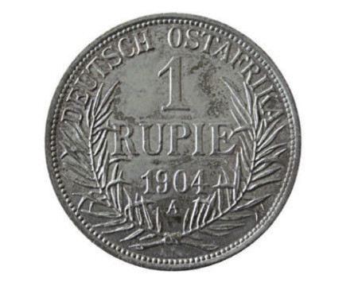

Wakati wa ukoloni, biashara za rejareja zilizohusisha bidhaa ndogondogo zilifanywa zaidi na Wahindi na Waarabu. Biashara za jumla zilifanywa na Wazungu na Wahindi, zikijumuisisha uzaji wa malighafi ili kupelekwa Ulaya na uingizaji nchini wa bidhaa za viwandani kutoka Ulaya. Wakoloni walisimamia na kudhibiti bei za bidhaa zilizouzwa ndani ya nchi na zilizoingizwa nchini kutoka Ulaya. Walihakikisha wananchi wanauza mazao yao kwa bei ya chini, huku wakinunua bidhaa zilizotoka Ulaya kwa bei kubwa. Biashara ilitumika kama njiaenzo ya kupora na kukandamiza jamii za Tanganyika katika maendeleo ya kiuchumi. Bidhaa walizozalishwa hazikununuliwa kwa bei ambayo ingeweza kuwainua wananchi kiuchumi. Kielelezo namba 10 kinaonesha sarafu zilizotumika wakati wa utawala wa Wajerumani na Waingereza.

(a) Sarafu zilizotumika wakati wa utawala wa Wajerumani
(b) Sarafu zilizotumika wakati wa utawala wa Waingereza
Kielelezo namba 10: Sarafu zilizotumika wakati wa ukoloni
Historia ya Tanzania na Maadili DRS V.indd 26
08/09/2025 10:32